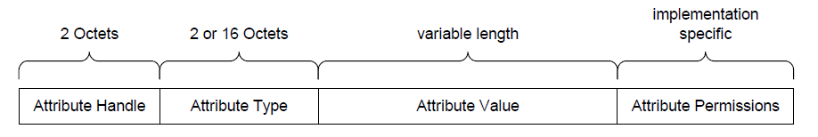
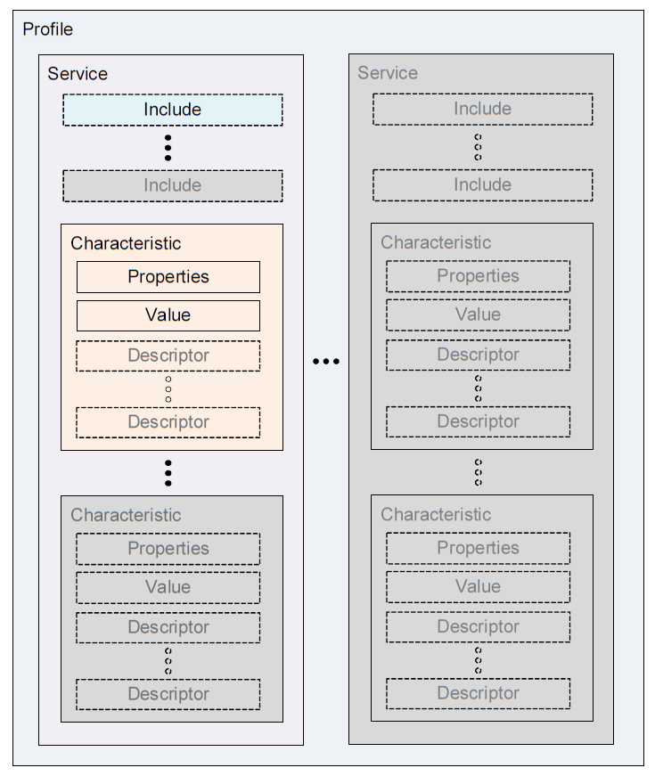
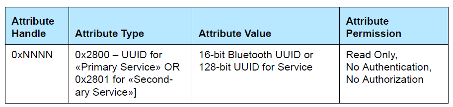
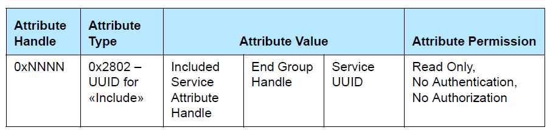
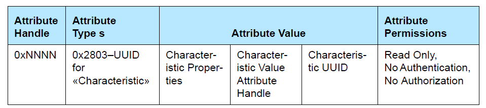
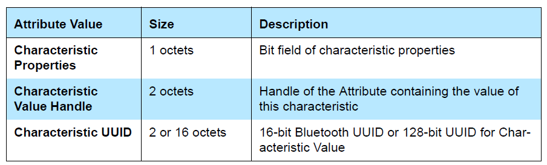
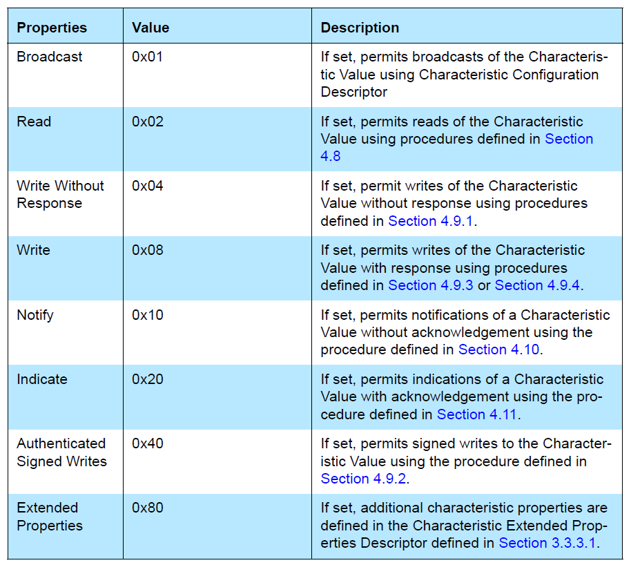
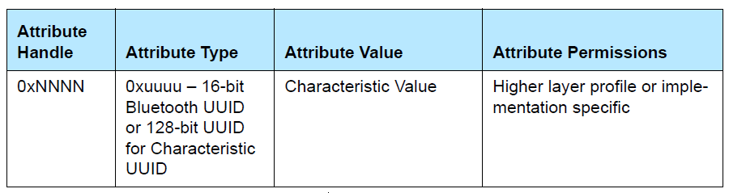
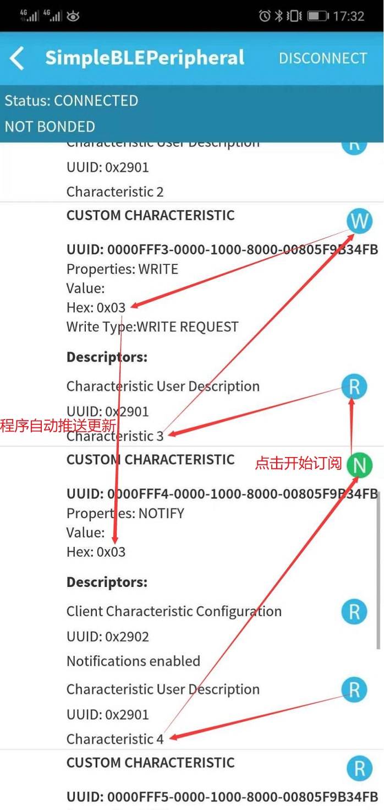

SimpleBLEPeripheral GATT Definition Hack
SimpleBLEPeripheral GATT分析
参考文档
Logical Attribute Representation
Attribute是基础数据结构，其根据Atrribute Type中的UUID的不同，而变成Service/Included Services/Characteristic等不同的性质数据结构，可以认为Atrribute是一个房间（struct），根据房间的功能（UUID的不同）来确定其大体功能，譬如卧室、书房、会客室等；

GATT Profile Hierarchy

Service
In GATT, a service is defined by its service definition, There are two types of services: primary service and secondary service
A primary service is a service that exposes the primary usable functionality of this device.
A secondary service is a service that is only intended to be referenced from a primary service or another secondary service or other higher layer specification.
Service Declaration

Included Services
An included service is a method to reference another service definition existing on the server into the service being defined.
Included Declaration

Characteristic
A characteristic is a value used in a service along with properties and configuration information about how the value is accessed and information about how the value is displayed or represented.
Characteristic Declaration

Attribute Value Field in characteristic declaration

Characteristic Properties In the Attribute Value

Characteristic Value Declaration

Characteristic Descriptor Declarations
Attribute Type 0x2900 for Characteristic Extended Properties
Attribute Type 0x2901 for Characteristic User Description
Attribute Type 0x2902 for Client Characteristic Configuration
Attribute Type 0x2903 for Server Characteristic Configuration
Attribute Type 0x2904 for Characteristic Presentation Format
SimpleBLEPeripheral GATT
static gattAttribute_t simpleProfileAttrTbl[SERVAPP_NUM_ATTR_SUPPORTED] =
{
// Simple Profile Service: Service Declaration
{
/**
* // Size of 16-bit Bluetooth UUID
* #define ATT_BT_UUID_SIZE 2
*
*
* #define GATT_PRIMARY_SERVICE_UUID 0x2800 // Primary Service
*
* // Primary Service UUID
* CONST uint8 primaryServiceUUID[ATT_BT_UUID_SIZE] =
* {
* LO_UINT16( GATT_PRIMARY_SERVICE_UUID ), HI_UINT16( GATT_PRIMARY_SERVICE_UUID )
* };
*/
{ ATT_BT_UUID_SIZE, primaryServiceUUID }, /* type */ // {2, 0x2800}
/**
* #define GATT_PERMIT_READ 0x01 //!< Attribute is Readable
* #define GATT_PERMIT_WRITE 0x02 //!< Attribute is Writable
* #define GATT_PERMIT_AUTHEN_READ 0x04 //!< Read requires Authentication
* #define GATT_PERMIT_AUTHEN_WRITE 0x08 //!< Write requires Authentication
* #define GATT_PERMIT_AUTHOR_READ 0x10 //!< Read requires Authorization
* #define GATT_PERMIT_AUTHOR_WRITE 0x20 //!< Write requires Authorization
* #define GATT_PERMIT_ENCRYPT_READ 0x40 //!< Read requires Encryption
* #define GATT_PERMIT_ENCRYPT_WRITE 0x80 //!< Write requires Encryption
*/
GATT_PERMIT_READ, /* permissions */
0, /* handle */
/**
* // Simple Profile Service attribute
* static CONST gattAttrType_t simpleProfileService = { ATT_BT_UUID_SIZE, simpleProfileServUUID };
*
* // Simple Profile Service UUID
* #define SIMPLEPROFILE_SERV_UUID 0xFFF0
*
* // Simple GATT Profile Service UUID: 0xFFF0
* CONST uint8 simpleProfileServUUID[ATT_BT_UUID_SIZE] =
* {
* LO_UINT16(SIMPLEPROFILE_SERV_UUID), HI_UINT16(SIMPLEPROFILE_SERV_UUID)
* };
*/
(uint8 *)&simpleProfileService /* pValue */ // {2, 0xFFF0}
},
// Characteristic 1 Declaration
{
/**
* // GATT Declarations
* #define GATT_PRIMARY_SERVICE_UUID 0x2800 // Primary Service
* #define GATT_SECONDARY_SERVICE_UUID 0x2801 // Secondary Service
* #define GATT_INCLUDE_UUID 0x2802 // Include
* #define GATT_CHARACTER_UUID 0x2803 // Characteristic
*
* // Characteristic UUID
* CONST uint8 characterUUID[ATT_BT_UUID_SIZE] =
* {
* LO_UINT16( GATT_CHARACTER_UUID ), HI_UINT16( GATT_CHARACTER_UUID )
* };
*/
{ ATT_BT_UUID_SIZE, characterUUID }, // {2, 0x2803}
/**
* #define GATT_PERMIT_READ 0x01 //!< Attribute is Readable
* #define GATT_PERMIT_WRITE 0x02 //!< Attribute is Writable
* #define GATT_PERMIT_AUTHEN_READ 0x04 //!< Read requires Authentication
* #define GATT_PERMIT_AUTHEN_WRITE 0x08 //!< Write requires Authentication
* #define GATT_PERMIT_AUTHOR_READ 0x10 //!< Read requires Authorization
* #define GATT_PERMIT_AUTHOR_WRITE 0x20 //!< Write requires Authorization
* #define GATT_PERMIT_ENCRYPT_READ 0x40 //!< Read requires Encryption
* #define GATT_PERMIT_ENCRYPT_WRITE 0x80 //!< Write requires Encryption
*/
GATT_PERMIT_READ,
0,
/**
* #define GATT_PROP_BCAST 0x01 //!< Permits broadcasts of the Characteristic Value
* #define GATT_PROP_READ 0x02 //!< Permits reads of the Characteristic Value
* #define GATT_PROP_WRITE_NO_RSP 0x04 //!< Permits writes of the Characteristic Value without response
* #define GATT_PROP_WRITE 0x08 //!< Permits writes of the Characteristic Value with response
* #define GATT_PROP_NOTIFY 0x10 //!< Permits notifications of a Characteristic Value without acknowledgement
* #define GATT_PROP_INDICATE 0x20 //!< Permits indications of a Characteristic Value with acknowledgement
* #define GATT_PROP_AUTHEN 0x40 //!< Permits signed writes to the Characteristic Value
* #define GATT_PROP_EXTENDED 0x80 //!< Additional characteristic properties are defined in the Characteristic Extended Properties Descriptor
*
* // Simple Profile Characteristic 1 Properties
* static uint8 simpleProfileChar1Props = GATT_PROP_READ | GATT_PROP_WRITE;
*/
&simpleProfileChar1Props
},
// Characteristic Value 1
{
/**
* // Key Pressed UUID
* #define SIMPLEPROFILE_CHAR1_UUID 0xFFF1
* #define SIMPLEPROFILE_CHAR2_UUID 0xFFF2
* #define SIMPLEPROFILE_CHAR3_UUID 0xFFF3
* #define SIMPLEPROFILE_CHAR4_UUID 0xFFF4
* #define SIMPLEPROFILE_CHAR5_UUID 0xFFF5
*
* // Characteristic 1 UUID: 0xFFF1
* CONST uint8 simpleProfilechar1UUID[ATT_BT_UUID_SIZE] =
* {
* LO_UINT16(SIMPLEPROFILE_CHAR1_UUID), HI_UINT16(SIMPLEPROFILE_CHAR1_UUID)
* };
*/
{ ATT_BT_UUID_SIZE, simpleProfilechar1UUID },
GATT_PERMIT_READ | GATT_PERMIT_WRITE,
0,
/**
* // Characteristic 1 Value
* static uint8 simpleProfileChar1 = 0;
*/
&simpleProfileChar1
},
// Characteristic 1 User Description
{
/**
* // GATT Descriptors
* #define GATT_CHAR_EXT_PROPS_UUID 0x2900 // Characteristic Extended Properties
* #define GATT_CHAR_USER_DESC_UUID 0x2901 // Characteristic User Description
* #define GATT_CLIENT_CHAR_CFG_UUID 0x2902 // Client Characteristic Configuration
* #define GATT_SERV_CHAR_CFG_UUID 0x2903 // Server Characteristic Configuration
* #define GATT_CHAR_FORMAT_UUID 0x2904 // Characteristic Presentation Format
* #define GATT_CHAR_AGG_FORMAT_UUID 0x2905 // Characteristic Aggregate Format
* #define GATT_VALID_RANGE_UUID 0x2906 // Valid Range
* #define GATT_EXT_REPORT_REF_UUID 0x2907 // External Report Reference Descriptor
* #define GATT_REPORT_REF_UUID 0x2908 // Report Reference Descriptor
*
* // Characteristic User Description UUID
* CONST uint8 charUserDescUUID[ATT_BT_UUID_SIZE] =
* {
* LO_UINT16( GATT_CHAR_USER_DESC_UUID ), HI_UINT16( GATT_CHAR_USER_DESC_UUID )
* };
*/
{ ATT_BT_UUID_SIZE, charUserDescUUID },
GATT_PERMIT_READ,
0,
/**
* // Simple Profile Characteristic 1 User Description
* static uint8 simpleProfileChar1UserDesp[17] = "Characteristic 1";
*/
simpleProfileChar1UserDesp
},
[...省略]
};
GATT Routines
int main(void)osal_init_system()osalInitTasks()SimpleBLEPeripheral_Init( taskID )SimpleProfile_AddService( GATT_ALL_SERVICES )status = GATTServApp_RegisterService( simpleProfileAttrTbl, GATT_NUM_ATTRS( simpleProfileAttrTbl ), GATT_MAX_ENCRYPT_KEY_SIZE, &simpleProfileCBs )static gattAttribute_t simpleProfileAttrTbl[SERVAPP_NUM_ATTR_SUPPORTED]simpleProfileCBs// Simple Profile Service Callbacks CONST gattServiceCBs_t simpleProfileCBs = { simpleProfile_ReadAttrCB, // Read callback function pointer simpleProfile_WriteAttrCB, // Write callback function pointer NULL // Authorization callback function pointer };
VOID SimpleProfile_RegisterAppCBs( &simpleBLEPeripheral_SimpleProfileCBs )bStatus_t SimpleProfile_RegisterAppCBs( simpleProfileCBs_t *appCallbacks ) { if ( appCallbacks ) { /** * typedef struct * { * simpleProfileChange_t pfnSimpleProfileChange; // Called when characteristic value changes * } simpleProfileCBs_t; * * // Simple GATT Profile Callbacks * static simpleProfileCBs_t simpleBLEPeripheral_SimpleProfileCBs = * { * simpleProfileChangeCB // Charactersitic value change callback * }; */ simpleProfile_AppCBs = appCallbacks; return ( SUCCESS ); } else { return ( bleAlreadyInRequestedMode ); } }
static bStatus_t simpleProfile_WriteAttrCB( uint16 connHandle, gattAttribute_t *pAttr, uint8 *pValue, uint8 len, uint16 offset, uint8 method )该函数是蓝牙库自己回调的simpleProfile_AppCBs->pfnSimpleProfileChange( notifyApp )static void simpleProfileChangeCB( uint8 paramID ) { uint8 newValue; switch( paramID ) { case SIMPLEPROFILE_CHAR1: SimpleProfile_GetParameter( SIMPLEPROFILE_CHAR1, &newValue ); #if (defined HAL_LCD) && (HAL_LCD == TRUE) HalLcdWriteStringValue( "Char 1:", (uint16)(newValue), 10, HAL_LCD_LINE_3 ); #endif // (defined HAL_LCD) && (HAL_LCD == TRUE) break; case SIMPLEPROFILE_CHAR3: SimpleProfile_GetParameter( SIMPLEPROFILE_CHAR3, &newValue ); #if (defined HAL_LCD) && (HAL_LCD == TRUE) HalLcdWriteStringValue( "Char 3:", (uint16)(newValue), 10, HAL_LCD_LINE_3 ); #endif // (defined HAL_LCD) && (HAL_LCD == TRUE) break; default: // should not reach here! break; } }
SimpleProfile_GetParameter( SIMPLEPROFILE_CHAR1, &newValue )bStatus_t SimpleProfile_GetParameter( uint8 param, void *value ) { bStatus_t ret = SUCCESS; switch ( param ) { case SIMPLEPROFILE_CHAR1: *((uint8*)value) = simpleProfileChar1; break; case SIMPLEPROFILE_CHAR2: *((uint8*)value) = simpleProfileChar2; break; case SIMPLEPROFILE_CHAR3: *((uint8*)value) = simpleProfileChar3; break; case SIMPLEPROFILE_CHAR4: *((uint8*)value) = simpleProfileChar4; break; case SIMPLEPROFILE_CHAR5: VOID memcpy( value, simpleProfileChar5, SIMPLEPROFILE_CHAR5_LEN ); break; default: ret = INVALIDPARAMETER; break; } return ( ret ); }
bStatus_t SimpleProfile_SetParameter( uint8 param, uint8 len, void *value )bStatus_t SimpleProfile_SetParameter( uint8 param, uint8 len, void *value ) { bStatus_t ret = SUCCESS; switch ( param ) { case SIMPLEPROFILE_CHAR1: if ( len == sizeof ( uint8 ) ) { simpleProfileChar1 = *((uint8*)value); } else { ret = bleInvalidRange; } break; case SIMPLEPROFILE_CHAR2: if ( len == sizeof ( uint8 ) ) { simpleProfileChar2 = *((uint8*)value); } else { ret = bleInvalidRange; } break; case SIMPLEPROFILE_CHAR3: if ( len == sizeof ( uint8 ) ) { simpleProfileChar3 = *((uint8*)value); } else { ret = bleInvalidRange; } break; case SIMPLEPROFILE_CHAR4: if ( len == sizeof ( uint8 ) ) { simpleProfileChar4 = *((uint8*)value); // See if Notification has been enabled GATTServApp_ProcessCharCfg( simpleProfileChar4Config, &simpleProfileChar4, FALSE, simpleProfileAttrTbl, GATT_NUM_ATTRS( simpleProfileAttrTbl ), INVALID_TASK_ID, simpleProfile_ReadAttrCB ); } else { ret = bleInvalidRange; } break; case SIMPLEPROFILE_CHAR5: if ( len == SIMPLEPROFILE_CHAR5_LEN ) { VOID memcpy( simpleProfileChar5, value, SIMPLEPROFILE_CHAR5_LEN ); } else { ret = bleInvalidRange; } break; default: ret = INVALIDPARAMETER; break; } return ( ret ); }
uint16 SimpleBLEPeripheral_ProcessEvent( uint8 task_id, uint16 events )performPeriodicTask()static void performPeriodicTask( void ) { uint8 valueToCopy; uint8 stat; // Call to retrieve the value of the third characteristic in the profile stat = SimpleProfile_GetParameter( SIMPLEPROFILE_CHAR3, &valueToCopy); if( stat == SUCCESS ) { /* * Call to set that value of the fourth characteristic in the profile. Note * that if notifications of the fourth characteristic have been enabled by * a GATT client device, then a notification will be sent every time this * function is called. */ SimpleProfile_SetParameter( SIMPLEPROFILE_CHAR4, sizeof(uint8), &valueToCopy); } }
GATT表simpleProfileAttrTbl在系统初始化阶段就被加载了。
SimpleBLEPeripheral Test
